CONTAMINACIÓN AMBIENTAL
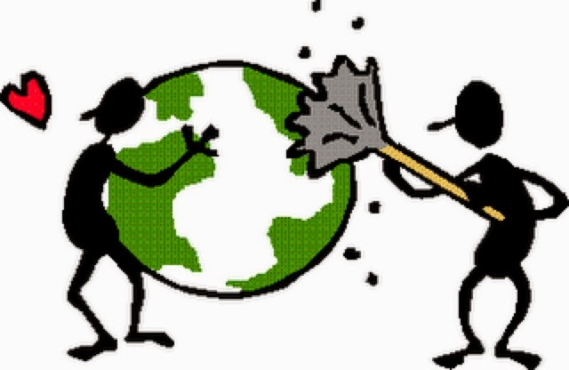
Se denomina contaminación ambiental a la presencia en el ambiente de cualquier agente (físico, químico o biológico) o bien de una combinación de varios agentes en lugares, formas y concentraciones tales que sean o puedan ser nocivos para la salud, la seguridad o para el bienestar de la población, o bien, que puedan ser perjudiciales para la vida vegetal o animal, o impidan el uso normal de las propiedades y lugares de recreación y goce de los mismos. La contaminación ambiental es también la incorporación a los cuerpos receptores de sustancias sólidas, liquidas o gaseosas, o mezclas de ellas, siempre que alteren desfavorablemente las condiciones naturales del mismo, o que puedan afectar la salud, la higiene o el bienestar del público.
Contaminación del agua: es la incorporación al agua de materias extrañas, como microorganismos, productos químicos, residuos industriales, y de otros tipos o aguas residuales. Estas materias deterioran la calidad del agua y la hacen inútil para los usos pretendidos.
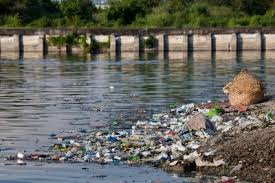Contaminación del suelo: es la incorporación al suelo de materias extrañas, como basura, desechos tóxicos, productos químicos, y desechos industriales. La contaminación del suelo produce un desequilibrio físico, químico y biológico que afecta negativamente las plantas, animales y humanos.
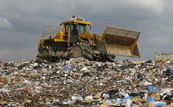Contaminación del aire: es la adición dañina a la atmósfera de gases tóxicos, CO, u otros que afectan el normal desarrollo de plantas, animales y que afectan negativamente la salud de los humanos.
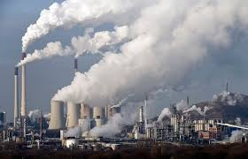La contaminación del aire (o atmosférica) es la producida por los humos de los vehículos e industrias, aerosoles, polvo, ruidos, malos olores, radiación atómica, etc. Entre los contaminantes gaseosos más comunes encontramos el dióxido de carbono, el monóxido de carbono, los hidrocarburos, los óxidos de nitrógeno, los óxidos de azufre y el ozono
La contaminación del agua (o hídrica). Según la Organización Mundial de la Salud (OMS), el agua está contaminada cuando su composición se haya alterado de modo que no reúna las condiciones necesarias para ser utilizada beneficiosamente en el consumo del hombre y de los animales. La contaminación del agua afecta a ríos, acuíferos y mares, que se convierten poco a poco en verdaderos basureros.
La contaminación del suelo es la producida por el vertido de sustancias químicas y basuras. Cuando acumulamos basuras al aire libre en un mismo lugar durante mucho tiempo, parte de los residuos orgánicos fermentan y se filtran a través del suelo, sobre todo cuando éste es permeable. Al dejar pasar los líquidos, contamina con hongos, bacterias y otros microorganismos patógenos el suelo y las aguas (superficiales y subterráneas) que están en contacto con él, afectando a las cadenas alimenticias. Los plaguicidas utilizados en la agricultura son otro de los principales contaminantes del suelo.
 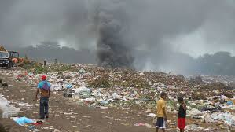
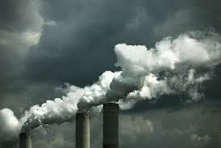
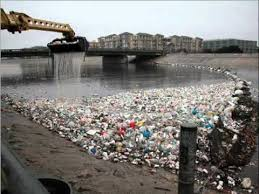
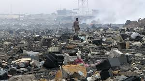
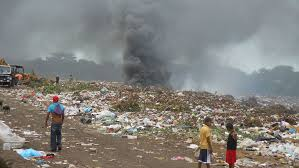
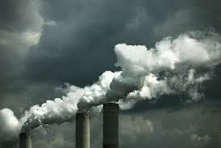
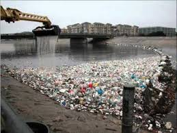
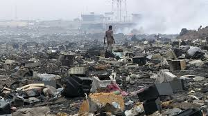
La contaminación ambiental deteriora cada vez mas a nuestro planeta y a nosotros mismos pues según investigaciones al respirar el aire contaminado esto afecta nuestra salud cardiovascular por lo que normas estrictas de aire limpio contribuirían a una mejor salud con efectos en gran escala. Otra consecuencia es el debilitamiento de la capa de ozono, que protege a los seres vivos de la radiación ultravioleta del Sol, debido a la destrucción del ozono estratosférico y esto provoca el calentamiento global.La contaminacion al medio atenta contra la vida de plantas, animales y personas, genera daños físicos en los individuos, convierte en un elemento no consumible al agua y hace que en los suelos contaminados no sea posible la siembra. Esto afecta a demás el clima y las actividades realizadas por el ser humano dañandolo y perjudicándole.
El CO2 está presente en la atmósfera de forma natural, pero el gran aumento de emisiones y su concentración fruto de la quema de combustibles fósiles acentúa los efectos del efecto invernadero. La temperatura está subiendo y el cambio climático ya está aquí, con consecuencias dramáticas para las personas, aumentando la violencia de fenómenos meteorológicos como los huracanes o la sequía.
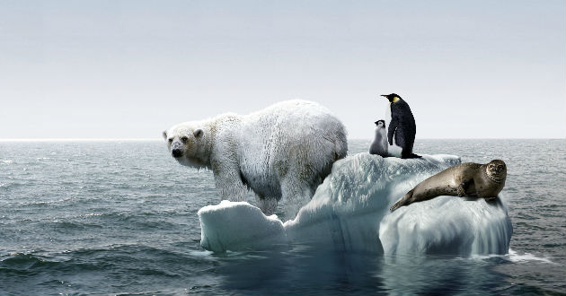La contaminación de los suelos hace que la siembra sea imposible, lo que tiene un doble efecto. Por una parte, hay escasez de alimentos, y por la otra el clima se ve afectado debido a la ausencia de plantas. La deforestación es otro de los efectos de la contaminación de los suelos, ya que se gana terreno al bosque para reemplazar los terrenos perdidos. Los vertederos al aire libre o cementerios nucleares son buenos ejemplos de contaminación del suelo.
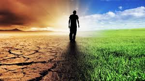Las plantas ven como la polución afecta su crecimiento, y muchas especies no han podido adaptarse a la escasez de lluvias, la contaminación del aire o el agua, etc., lo que ha supuesto su desaparición y la aceleración de la desertificación. En cuanto a los animales, muchas especies terrestres han visto alterado su hábitat por culpa de la contaminación ambiental, han perdido sus fuentes de alimentos, etc. En ocasiones son acciones hechas a propósito que han llevado a algunas especies al peligro de extinción.
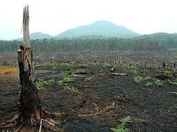El presidente del Consejo Municipal de Medio Ambiente, Jorge Osuna, informó que tras el final del monitoreo realizado por una estación ambiental en el Centro Histórico el diagnóstico es poco alentador: “esa zona de Atlixco presenta una contaminación permanente del aire de 23 por ciento”. Eso indica, explicó, que el primer cuadro de la ciudad alcanza los niveles de metales pesados similares a los detectados en la capital de Puebla. “Pese a que Atlixco cuenta con un promedio de 130 mil habitantes, el grado de contaminación registrado en la estación instalada a un costado de la plaza principal equivale a una mancha urbana con más de 300 mil pobladores”, alertó durante un encuentro con la prensa. Es preocupante, soslayó, que este espectro de partículas negativas flotando en el aire del primer cuadro de la ciudad encuentre una cifra elevada continuamente. “Los principales factores que contribuyen a este panorama son los automóviles, y por encima de los particulares, los del transporte público foráneo y local. Y hablo de microbuses, combis y suburban”. Osuna explicó que “el aire limpio está compuesto principalmente por nitrógeno y oxígeno, y en pequeñas proporciones se puede encontrar vapor de agua y dióxido de carbono. La contaminación del aire proviene de la adición de sustancias emitidas a la atmósfera que causan un desequilibrio en la composición original”. El aire contaminado, relató, contiene gases, polvos, olores y humos en grandes cantidades que dañan la salud de las personas, animales y plantas. “Además deteriora la infraestructura urbana y algunos materiales de uso cotidiano”. Existen, finalizó, dos tipos de contaminantes: “los arrojados directamente a la atmósfera como resultado de un proceso de combustión se llaman contaminantes primarios; estos son el dióxido de azufre (SO2), monóxido de carbono (CO), vapores de combustibles y solventes, plomo (Pb) y partículas suspendidas”. Una vez en el aire, “algunos de estos agentes primarios reaccionan con otros compuestos y forman contaminantes de igual o mayor toxicidad, estos se denominan contaminantes secundarios como el ozono (O3), el dióxido de nitrógeno (NO2) y algún otro tipo de partículas”.
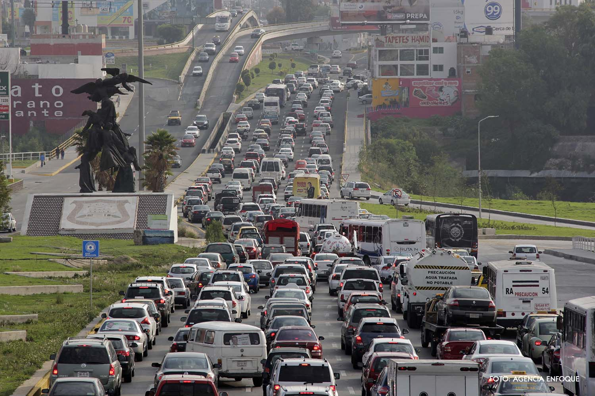Las acciones para prevenir la contaminación atmosférica deben ser hábito cotidiano de todos, en todos los lugares y todo el tiempo, para que realmente sean efectivas.
Evitaria la quema de basura. Evitaria comprar artículos desechables y plásticos que no son biodegradables. Reciclar la basura No arrojar basura en la calle. Evitar el consumo de tabaco. Reduce el consumo de electricidad, lo cual contribuirá a disminuir las emanaciones de contaminantes y partículas. Aplicar de las 3 Erres: Reduce-Reutiliza-Recicla. Un menor consumo redundará en menor contaminación atmosférica de todo tipo.
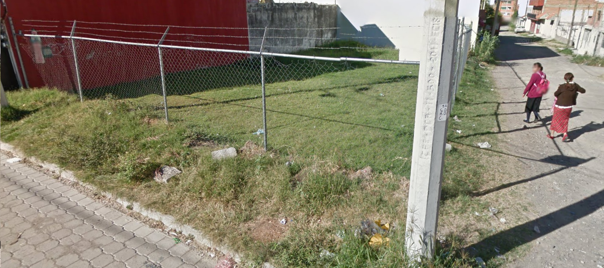